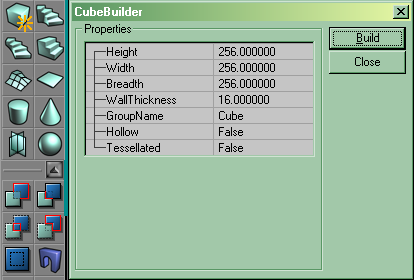
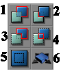

Adding A Block
This page is both:
- a Basic Procedure tutorial page. It explains how to perform a single procedure which is required in many different contexts.
- One of a sequence of Mapping Lessons.
Overview
The Unreal Engine thinks of the entire Unreal world as solid matter when you start a new map. Once you have subtracted a space you may want to add a small piece back in. This is called adding, because we tell UnrealEd to add a chunk of "solid" material to a subtracted space.
You can not add solid geometry into your Map unless you first place it into a Subtracted Space.
Instructions
To create a block in your level:
- You will need a map with a subtracted space. Subtract a Space
The UnrealEd Interface has a set of buttons running down the left side of the screen. This is called the toolbox and is divided into several groups. In the 3rd group of buttons, find the top-left button of that group is a blue-green cube. (In UnrealEd 2 and later, each group can be collapsed, but normally this group is visible.) Right-click the cube button.

setting the cube builder parameters
- This opens a floating window with a list of parameters for the Cube Brushbuilder. Type in the height, width and breadth you want for the space. You can use the mouse to select the fields or hit Tab to move the focus. The numbers are all in Unreal Units.
- For now create a small cube, make it 64x64x64
For more on using the parameters window, see Brushbuilders.
If you would like to move this object around hold the ctrl button and drag with your mouse.
 |
|
In more depth
This action has taken the current shape of the red builder brush, and used it as a template to create a real, additive brush in the world.
The other brushbuilder buttons create different basic shapes, try messing around with adding different shapes to your level. Dont forget to "rebuild" or you may not be able to see the changes.
Rules of thumb
You should not make additive brushes go outside the area which you subtracted.
You should not make additive brushes overlap each other.
These above can cause undesired results in you map I would strongly recommend against it. (see BSP Hole)
To save yourself some hastles when you are getting started I suggest using the grid snap.
Foxpaw: Why shouldn't additive brushes overlap each other?
OlympusMons: Im not entirely sure I thought it caused holes in the map. I figured it would be safe if beginners started simple. If im wrong in anyway please change it.
Related Topics
- Creating A Terrain – Your recommended next step in the Mapping Lessons.
- UnrealEd Interface – a complete reference for UnrealEd's menus, windows and buttons.
- General Scale And Dimensions – compares Unreal Unit dimensions to real world scale.
- Brushbuilders – a must if you would like to add shapes other than cubes.
- Brush – a complete reference for the brush class, has lots of useful information on using brushes of all types.